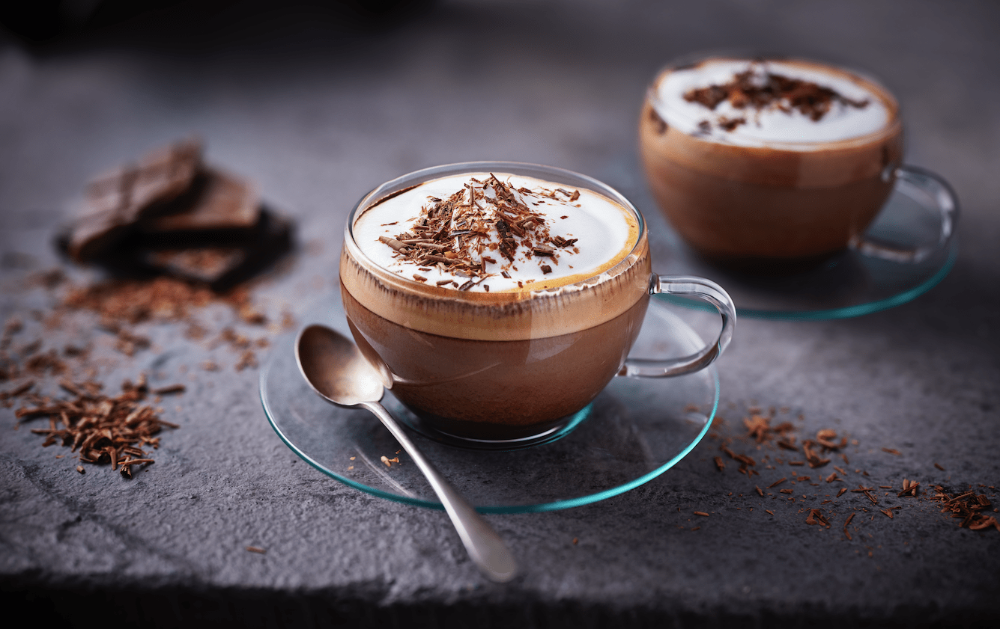

“The idea of Ceremony starts with the thought that coffee by itself is compelling,
but how it brings people to connect in explicitly human ways all over the world is
what makes it infinitely spellbinding. ”
Cappucino:
It also known as a “traditional morning heart starter”.
Basically, this hugely popular coffee drink was created to cater to people that liked cream in their coffee.
A true cappuccino is a combination of equal parts espresso, steamed milk and milk froth.
Cappucino always served in a preheated vitrified ceramic cup.

Americano:
American coffee is a type of coffee drink prepared by diluting an espresso with hot water, giving it a similar strength to, but different flavor from, traditionally brewed coffee.
Its strength varies with the number of shots of espresso and amount of water added.

MOCHA
Mocha:
Although a mocha is often interpreted differently across the world, the basis is that a shot of espresso is combined with a chocolate powder or syrup, followed by milk or cream.
It is a variant of a latte, in the sense that it is often 1/3 espresso and 2/3 steamed milk.
However, a chocolate flavour is added, and this can be milk or dark.